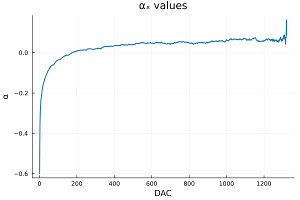
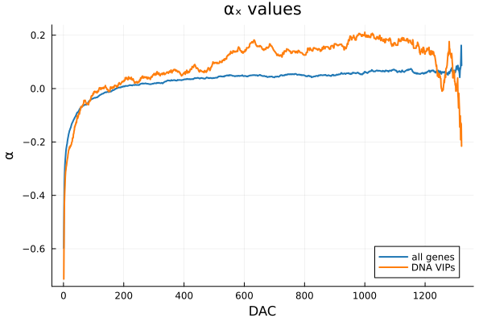
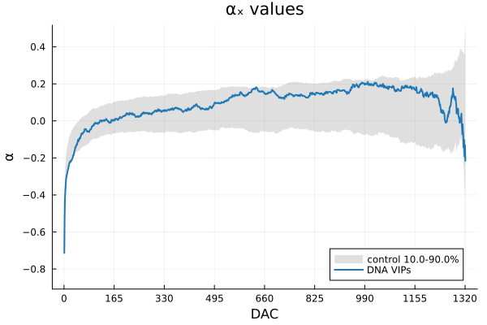
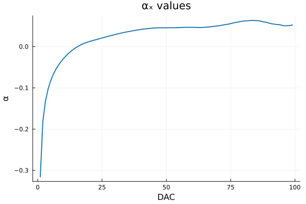
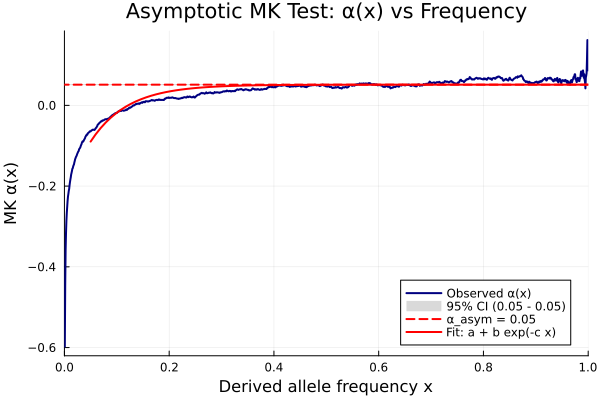

MK tests
The McDonald-Kreitman (MK) family compares polymorphism and divergence at nonsynonymous (N) and synonymous (S) sites. Under neutrality Dn/Ds = Pn/Ps; adaptive substitutions inflate Dn. All functions take a raw SFS and [Dn, Ds, Ln, Ls] (see Input data), and also accept a Vector of each (one result row per dataset, returned as a DataFrame).
The examples use the whole 1000 Genomes table:
sfs, div, alpha_x = MKtest.parse_sfs("data/MKdata_tgp_may2023.txt"; sample_size = 661)Standard MK test
alpha = 1 - (Pn / Ps) (Ds / Dn) (Smith & Eyre-Walker 2002), with a Fisher exact test of the 2x2 table.
MKtest.standard_mk(sfs, div)
# (alpha = -0.598, p_value = 0.0, omega = 0.284, omega_a = -0.170, omega_d = 0.453)omega = (Dn/Ln) / (Ds/Ls), split into its adaptive (omega_a = alpha * omega) and non-adaptive (omega_d) parts. Slightly deleterious polymorphisms make the standard alpha negative, as here.
Fay, Wyckoff and Wu (FWW)
Polymorphisms below a frequency cutoff are removed before computing alpha (Fay et al. 2002), which discards most slightly deleterious variants; 15% is the usual choice (Charlesworth & Eyre-Walker 2008).
MKtest.fww_mk(sfs, div; cutoff = 0.15)
# (alpha = 0.008, p_value = 0.580, omega = 0.284, omega_a = 0.0023, omega_d = 0.281)Imputed MK test
Instead of removing low-frequency polymorphisms, the imputed MK test (Murga-Moreno et al.
- subtracts the slightly deleterious ones it estimates from the shape of the SFS
below cutoff, which keeps more information for gene-level tests.
MKtest.imputed_mk(sfs, div; cutoff = 0.15)
# (alpha = 0.008, p_value = 0.331, b = 0.172, f = 0.281, d = 0.547, omega = 0.284, ...)b, f and d are the fractions of new nonsynonymous mutations estimated to be slightly deleterious, neutral and strongly deleterious.
Both tests take the frequency of each row as DAC / n, with n the number of chromosomes (size(sfs, 1) + 1 by default). For an SFS trimmed with parse_sfs(...; cutoff) pass n = sample_size * ploidy: a top-only trim cannot be detected and would otherwise shift every frequency. A table from reduce_sfs, whose first column already holds frequencies, is used as it is.
Asymptotic MK test
alpha is computed as a function of frequency, alpha(x) from the polymorphisms at frequency >= x, and the curve is extrapolated to x = 1 (Messer & Petrov 2013), which removes the bias of slightly deleterious polymorphisms. cutoff restricts the frequencies used in the fit; [0.0, 0.7] is common for empirical data.
amk = MKtest.asymptotic_mk(sfs, div; cutoff = [0.0, 0.7])
# amk.asymptotic_mk = 0.0118, CI [0.0081, 0.0154]; fit a + b exp(-c x) with
# a = 0.0118, b = -0.318, c = 21.7
MKtest.asymptotic_mk(sfs, div; cutoff = [0.0, 0.7], model = MKtest.LinearFit())
# asymptotic_mk = 0.0823, CI [0.0679, 0.0966]The fitted model is ExponentialFit() (a + b exp(-c x), the default) or LinearFit() (a + b x). Only the chosen model is fitted: if the fit fails the result is NaN, with no silent fallback to the other. The CI is the 95% interval of the asymptote. The result also holds the f and alpha_x points used.
asymptotic_mk also takes the alpha_x table from parse_sfs, or a bare alpha(x) vector: MKtest.asymptotic_mk(alpha_x; cutoff = [0.0, 0.7]).
MKtest.α_x(sfs, div) returns the alpha(x) table [DAC frequency alpha(x)] itself.
Direction of selection and neutrality index
MKtest.dos(sfs, div) # (dos = -0.117, p_value = 0.0) Stoletzki & Eyre-Walker 2011
MKtest.ni(sfs, div) # (ni = 1.598, p_value = 0.0) Rand & Kann 1996MKtest.ni_cmh(sfs_vector, div_vector) combines several datasets into one weighted NI (Stoletzki & Eyre-Walker 2011); it returns (ni = ...,), without a test.
Many datasets and multiple testing
With a Vector of SFS and divergence (for instance from a gene list with one gene per line and mode = :gene), every test returns a DataFrame, and correction = :fdr or :bonferroni adds a pvalue_adjusted column:
gs, gd, _ = MKtest.parse_sfs("data/MKdata_tgp_may2023.txt"; sample_size = 661,
gene_list = "data/ensembl_list.txt", mode = :gene)
MKtest.standard_mk(gs, gd; correction = :fdr)Plots
The plot functions load with Plots.jl. All examples use the 1000 Genomes table, the DNA-virus VIPs and their 1000 matched control sets (see Case and control sets); parse_sfs returns each alpha(x) curve as a [DAC frequency alpha(x)] table.
using MKtest, Plots
data = joinpath(pkgdir(MKtest), "data")
tgp = joinpath(data, "MKdata_tgp_may2023.txt")
sfs, div, alpha_x = MKtest.parse_sfs(tgp; sample_size = 661)
case_sfs, case_div, case_ax = MKtest.parse_sfs(tgp; sample_size = 661,
gene_list = joinpath(data, "DNAonly_VIPs.txt.gz"))
ctl_sfs, ctl_div, ctl_ax = MKtest.parse_sfs(tgp; sample_size = 661,
gene_list = joinpath(data, "DNAonly_nonVIPs.txt.gz"))alpha(x)
One curve, over the whole frequency range (cutoff = [0.0, 1.0], the default):
MKtest.plot_α_x(alpha_x; cutoff = [0.0, 1.0])
Several curves on the same panel: pass a vector of tables (or several alpha(x) vectors) and one label per curve.
MKtest.plot_α_x([alpha_x, case_ax]; labels = ["all genes", "DNA VIPs"], cutoff = [0.0, 1.0])
A case against its controls: the case curve first, then the control curves, drawn as a band between the 10% and 90% quantiles at each frequency (percentil = [0.1, 0.9]):
MKtest.plot_α_x(case_ax[:, 3], [x[:, 3] for x in ctl_ax]; labels = ["DNA VIPs"],
cutoff = [0.0, 1.0])
The curve can also be computed from an SFS directly, projected first to sample_size individuals:
MKtest.plot_α_x(sfs, div; sample_size = 50, cutoff = [0.0, 1.0])
Asymptotic MK
The asymptotic fit: the observed alpha(x), the fitted curve, the asymptote (dashed) and its 95% CI.
amk = MKtest.asymptotic_mk(sfs, div)
MKtest.plot_asymptotic_mk(amk)
output_path = "fig.pdf" saves any of these figures (png, svg, pdf, ps or html), and other Plots.jl keywords (title, ylims, ...) pass through.